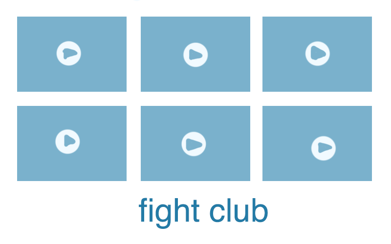

my 1st idea is that it will take clips of fights from the wayback machine and it focuses on the voyuerism and intrigue of fights. it will be thumbnails of fights published on a platform (such as tumblr?)
my second idea would be sending passages from a biography to a Bot and recording the various replies from the bot. I am not sure what biography to do yet.
an idea about pasting Silly Clickbait titles to very Serious images to critique the ridiculousness of clickbait.
sending Tinder matches passages from old romantic texts and seeing real world replies.